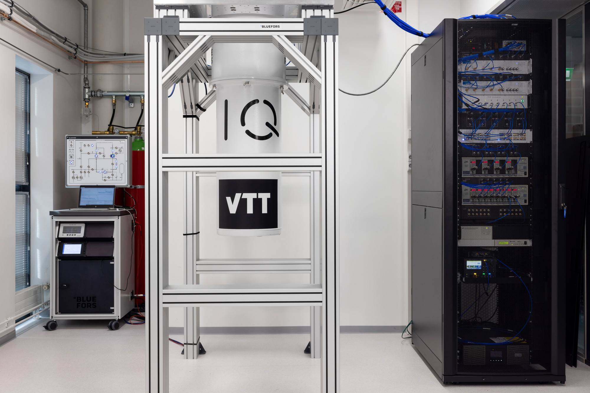

Introduction to Helmi with Qiskit#
Helmi is a 5 qubit Quantum Computer that is co-developed by VTT and IQM. It uses superconducting transmon qubits in a star shaped topology. Helmi’s natives gates consist of the phased-rx and controlled-z gates. This architecture is called Adonis by IQM.
In this tutorial running on Helmi is demonstrated using the Qiskit framework. You can also run on Helmi using Cirq with cirq-on-iqm adapter, and this is described in a separate notebook.
Here is Helmi!

Setup#
This notebook uses the following requirements.
qiskit-iqm==13.7
iqm-client==17.5
qiskit[visualization]
pylatexenc
Using Helmi with Qiskit#
First we import qiskit-on-iqm which is needed to run on Helmi with qiskit. You can read the user guide here.
import networkx as nx
from iqm.qiskit_iqm import IQMProvider
from iqm.qiskit_iqm.iqm_transpilation import optimize_single_qubit_gates
from qiskit import QuantumCircuit, QuantumRegister, execute, transpile
from qiskit.tools.monitor import job_monitor
from qiskit.visualization import plot_histogram
Then connection to the backend is simple! For this we point the IQMProvider at what is called the “cocos URL”. The cocos url to access Helmi is provided below.
provider = IQMProvider("https://qc.vtt.fi/helmi/cocos")
backend = provider.get_backend()
Now that we have the backend connected to Helmi, let’s print out some information about Helmi!
print(f"Native operations: {backend.operation_names}")
print(f"Number of qubits: {backend.num_qubits}")
print(f"Coupling map: {backend.coupling_map}")
Visualising the topology with networkx:
G = nx.Graph()
G.add_edges_from(backend.coupling_map)
node_labels = {node: f"QB{node + 1}" for node in G.nodes}
nx.draw(G, labels=node_labels, node_color="skyblue", node_size=500, font_size=10)
Constructing and executing quantum circuits#
Circuits are constructed and submitted to Helmi using the same methods as with IBM machines. First we construct a Bell pair circuit between 2 qubits. The circuit is then executed on the backend using the execute function.
circuit = QuantumCircuit(2, name="Bell pair circuit")
circuit.h(0)
circuit.cx(0, 1)
circuit.measure_all()
circuit.draw(output="mpl")
Executing the circuit on Helmi#
When submitting a job to Helmi a unique identifier for your job is returned. This can be used to gather additional information about the circuit you just submitted and the results. You should save your job ids!
job = execute(circuit, backend, shots=100)
print(f"Job ID: {job.job_id()}.")
print("Tracking execution of job:")
job_monitor(job)
The execute function from qiskit performs the quantum circuit transpilation by default. If you want to inspect the transpiled circuit, the circuit_callback option can be used. To run without automatic transpilation, backend.run can be used directly, in which case transpilation must be performed manually.
def print_circ(circuit):
for qc in circuit:
print(qc.draw())
job = execute(circuit, backend, shots=100, circuit_callback=print_circ)
print(f"Job ID: {job.job_id()}.")
print("Tracking execution of job:")
job_monitor(job)
Viewing the results#
Results can be printed once the job has completed. If results are queried before the job has completed then an error will be returned.
result = job.result()
print(result.job_id) # The job id can be queried from the result
print(result.get_counts())
# print(result.get_memory())
plot_histogram(result.get_counts())
You can also specify some backend arguments for running on Helmi. These are explained in the qiskit-on-iqm documentation.
# job = execute(
# circuit,
# backend,
# shots=100,
# calibration_set_id="c5a5e2d1-100b-42d4-a4fd-a49edfb9d176",
# max_circuit_duration_over_t2=1.0,
# heralding_mode="zeros",
# circuit_callback=None,
# )
After submitting, the job is now running. The status of the job can be queried using job.status(). Using the job id, you can retrieve previous jobs.
status = job.status()
print(status)
# old_job = backend.retrieve_job(job_id)
Explicit Transpilation#
Instead of using the execute function you can also be explicit about your transpilation.
transpiled_circuit = transpile(
circuit, backend=backend, layout_method="sabre", optimization_level=3
)
transpiled_circuit.draw("mpl")
For more control, you can also specify the initial layout in both transpile and execute. For example, Helmi’s topology only allows 2 qubit gates between the central and outer qubits. Therefore we can map the 2 qubit gate to QB3. For this we make use of the QuantumRegister.
qreg = QuantumRegister(2, "QB")
circuit = QuantumCircuit(qreg, name="Bell pair circuit")
circuit.h(qreg[0])
circuit.cx(qreg[0], qreg[1])
circuit.measure_all()
# Qubit numbers start at 0 index whereas the qubit names start at 1 index.
qubit_mapping = {
qreg[0]: 1, # Map the first qubit to QB1
qreg[1]: 2, # Map the second qubit to QB3
}
job = execute(circuit, backend, shots=100, initial_layout=qubit_mapping)
Qiskit refers to qubits using integer indices, whereas IQM uses strings. The backend class provides utility methods for mapping them to one another. Let’s see on which physical qubits the logical circuit qubits were mapped.
mapping = {}
for qubit in circuit.qubits:
index = circuit.find_bit(qubit).index
mapping[index] = backend.index_to_qubit_name(index)
print(mapping)
Optimizing circuits for Helmi#
Qiskit on IQM provides the option to optimize your transpiled quantum circuits for running on Helmi. Currently the optimization uses Qiskit’s transpiler passes to reduce the number of single qubit gates in the quantum circuit, thus reducing the total circuit depth. Further information can be found in the IQM qiskit documentation.
Here we optimize the previous instance of transpiled_circuit as the optimize_single_qubit_gates expected a transpiled circuit as an argument.
circuit_optimized = optimize_single_qubit_gates(transpiled_circuit)
circuit_optimized.draw("mpl")
Results#
Results can be printed once the job has completed. If results are queried before the job has completed then an error will be returned.
result = job.result()
print(result.job_id) # The job id can be queried from the result
print(result.get_counts())
# print(result.get_memory())
plot_histogram(result.get_counts())
Additional metadata about the executed job can also be found.
exp_result = result._get_experiment(circuit)
print("Job ID: ", job.job_id()) # Retrieving the submitted job id
print(result.request.circuits) # Retrieving the circuit request sent
print(
"Calibration Set ID: ", exp_result.calibration_set_id
) # Retrieving the current calibration set id.
print(result.request.qubit_mapping) # Retrieving the qubit mapping
print(result.request.shots) # Retrieving the number of requested shots.
print(exp_result.header)
Simulating circuits locally with noise#
Qiskit on IQM provides an IQMFakeBackend with IQMFakeAdonis for simulating Helmi.
from iqm.qiskit_iqm import IQMFakeAdonis
fake_backend = IQMFakeAdonis()
job = execute(circuit, fake_backend, shots=1000)
print(job.result().get_counts())
plot_histogram(job.result().get_counts())
The error profile of the noise can be queried and customised by the user following the qiskit-iqm user guide.
print(fake_backend.error_profile)
error_profile = fake_backend.error_profile
error_profile.t1s["QB1"] = 38940.0 # in ns 3.8940
error_profile.t1s["QB2"] = 25127.0 # in ns
error_profile.t1s["QB3"] = 43322.0 # in ns
error_profile.t1s["QB4"] = 38223.0 # in ns
error_profile.t1s["QB5"] = 37365.0 # in ns
error_profile.t2s["QB1"] = 24785.0 # in ns
error_profile.t2s["QB2"] = 20751.0 # in ns
error_profile.t2s["QB3"] = 10050.0 # in ns
error_profile.t2s["QB4"] = 14391.0 # in ns
error_profile.t2s["QB5"] = 29012.0 # in ns
error_profile.single_qubit_gate_depolarizing_error_parameters["prx"]["QB1"] = 0.0043
error_profile.single_qubit_gate_depolarizing_error_parameters["prx"]["QB2"] = 0.0018
error_profile.single_qubit_gate_depolarizing_error_parameters["prx"]["QB3"] = 0.0022
error_profile.single_qubit_gate_depolarizing_error_parameters["prx"]["QB4"] = 0.0037
error_profile.single_qubit_gate_depolarizing_error_parameters["prx"]["QB5"] = 0.0024
error_profile.two_qubit_gate_depolarizing_error_parameters["cz"][("QB1", "QB3")] = 0.018
error_profile.two_qubit_gate_depolarizing_error_parameters["cz"][("QB2", "QB3")] = 0.033
error_profile.two_qubit_gate_depolarizing_error_parameters["cz"][("QB3", "QB4")] = 0.030
error_profile.two_qubit_gate_depolarizing_error_parameters["cz"][("QB3", "QB5")] = 0.017
error_profile.single_qubit_gate_durations["prx"] = 120 # in ns
error_profile.two_qubit_gate_durations["cz"] = 120 # in ns
error_profile.readout_errors["QB1"]["0"] = 0.03375
error_profile.readout_errors["QB1"]["1"] = 0.03865
error_profile.readout_errors["QB2"]["0"] = 0.032
error_profile.readout_errors["QB2"]["1"] = 0.0520
error_profile.readout_errors["QB3"]["0"] = 0.0365
error_profile.readout_errors["QB3"]["1"] = 0.05885
error_profile.readout_errors["QB4"]["0"] = 0.03735
error_profile.readout_errors["QB4"]["1"] = 0.06225
error_profile.readout_errors["QB5"]["0"] = 0.04375
error_profile.readout_errors["QB5"]["1"] = 0.05689
error_profile.name = "fake_helmi"
helmi_fake_backend = fake_backend.copy_with_error_profile(error_profile)
job = execute(circuit, helmi_fake_backend, shots=1000)
print(job.result().get_counts())
plot_histogram(job.result().get_counts())
Batch execution#
Helmi also allows for batches of circuits to be submitted with 1 call to the quantum computer. A batch is simply a list of QuantumCircuits. This is often faster than executing circuits individually, however, circuits will still be executed sequentially. On Helmi currently you can only place a maximum of 20 circuits in one batch. All circuits in a batch are executed with the same number of shots. The maximum number of shots per circuit is 100,000.
All circuits in a batch must measure the same qubits. Adding the initial_layout argument when submitting ensures that you always measure the same qubits.
Batch submission of circuits allows parameterized circuits to be executed using the qiskit.circuit.Parameter class.
circuits_list = []
circuit_1 = QuantumCircuit(2, name="Bell pair circuit")
circuit_1.h(0)
circuit_1.cx(0, 1)
circuit_1.measure_all()
circuits_list.append(circuit_1)
circuit_1.draw(output="mpl")
circuit_2 = QuantumCircuit(2, name="Reverse Bell pair circuit")
circuit_2.h(1)
circuit_2.cx(1, 0)
circuit_2.measure_all()
circuits_list.append(circuit_2)
circuit_2.draw(output="mpl")
# Execute and monitor job
job = execute(
circuits_list, backend, shots=10, optimization_level=3, initial_layout=[0, 2]
)
print("Tracking execution of job:")
job_monitor(job)
# Get results
result = job.result()
# Plot histograms
plot_histogram(result.get_counts(), legend=["Circuit 1", "Circuit 2"])
Pennylane Qiskit#
You can also run Pennylane code on Helmi with the PennyLane-Qiskit Plugin. The IQMBackend object uses BackendV2 currently which Pennylane-Qiskit does not support, therefore we use a forked-version that fixes this.
import pennylane as qml
# provider = IQMProvider("https://qc.vtt.fi/helmi/cocos")
# backend = provider.get_backend()
dev = qml.device("qiskit.remote", wires=5, backend=backend, shots=10)
print(dev.capabilities())
@qml.qnode(dev, interface="autograd")
def circuit(params):
qml.RX(params[0], wires=0)
qml.RY(params[1], wires=0)
return qml.expval(qml.PauliZ(0))
print(circuit([0.54, 0.12]))
Summary#
In this notebook we have demonstrated how to connect and run circuits on Helmi with Qiskit, qiskit-on-iqm and the PennyLane-Qiskit plugin.
Additional Reading#
Long-distance transmon coupler with CZ gate fidelity above 99.8%. Paper by IQM describing the superconducting technology behind Helmi.